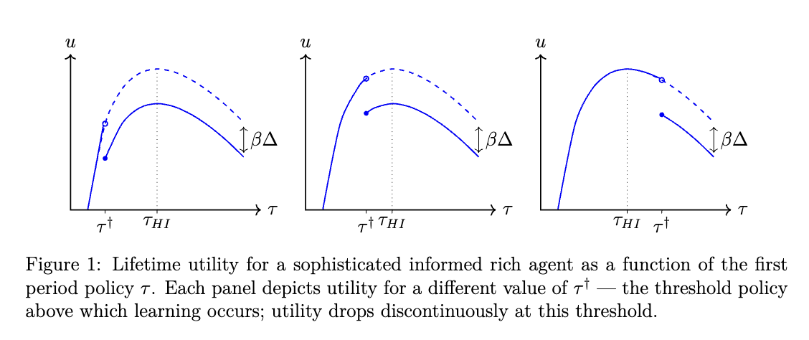
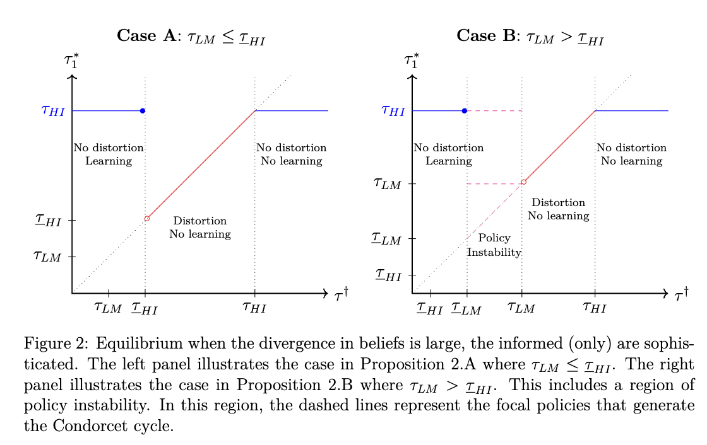
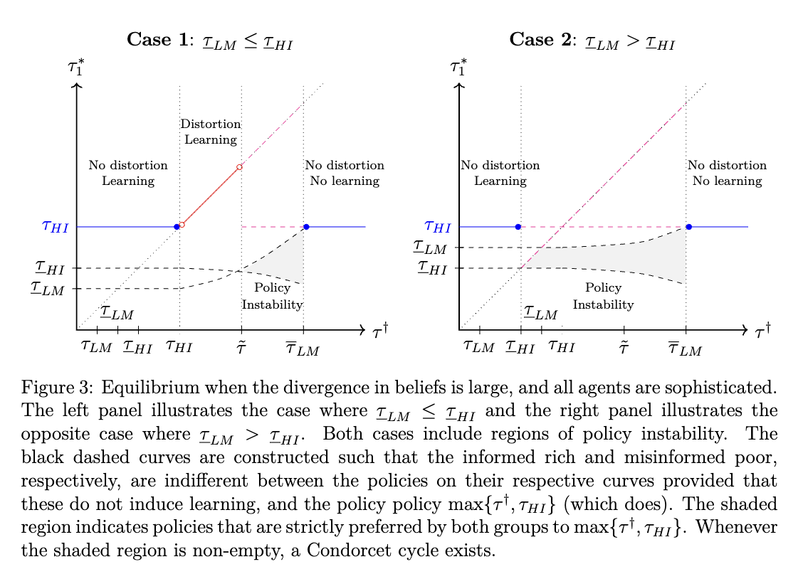

Peer-Reviewed Article
The Politics of the Slippery Slope
Abstract
Slippery slope arguments, the idea that otherwise beneficial reforms should be rejected lest they beget further undesirable ones, are ubiquitous in political discourse. We provide a learning-based policy-feedback mechanism to explain why slippery slope dynamics arise. Additionally, we provide conditions under which, in equilibrium, sophisticated agents will successfully manipulate policy to either induce or prevent a slippery slope dynamic.
Figures



Citation
Parameswaran, Giri, Gabriel Sekeres, and Haya Goldblatt. 2025. "The Politics of the Slippery Slope." Journal of Politics 87(2): 709-723. doi: 10.1086/732965.
BibTeX
@article{parameswaranSekeresGoldblatt2025,
author = {Giri Parameswaran and Gabriel Sekeres and Haya Goldblatt},
year = {2025},
title = {The Politics of the Slippery Slope},
journal = {Journal of Politics},
volume = {87},
number = {2},
pages = {709--723},
url = {https://doi.org/10.1086/732965}
}